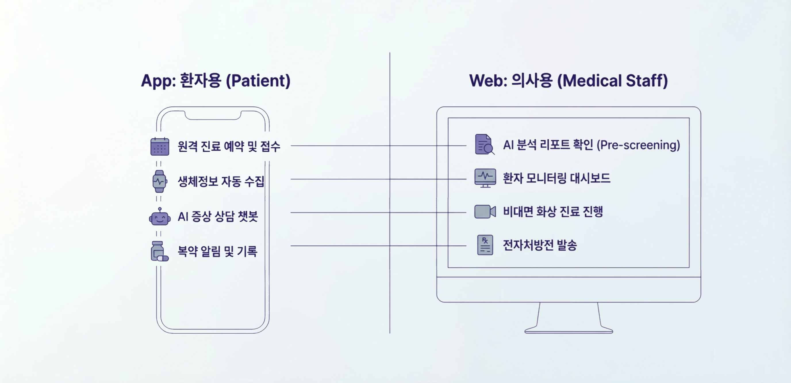
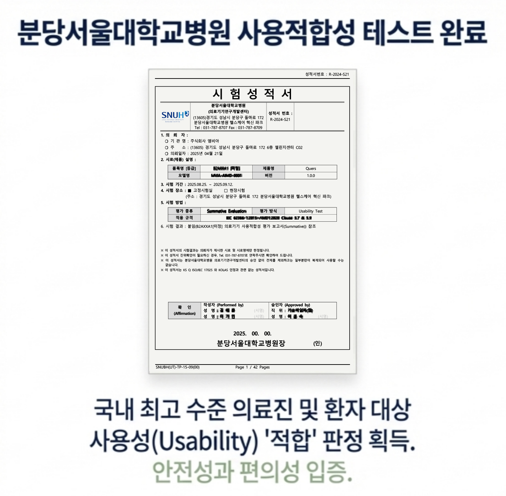
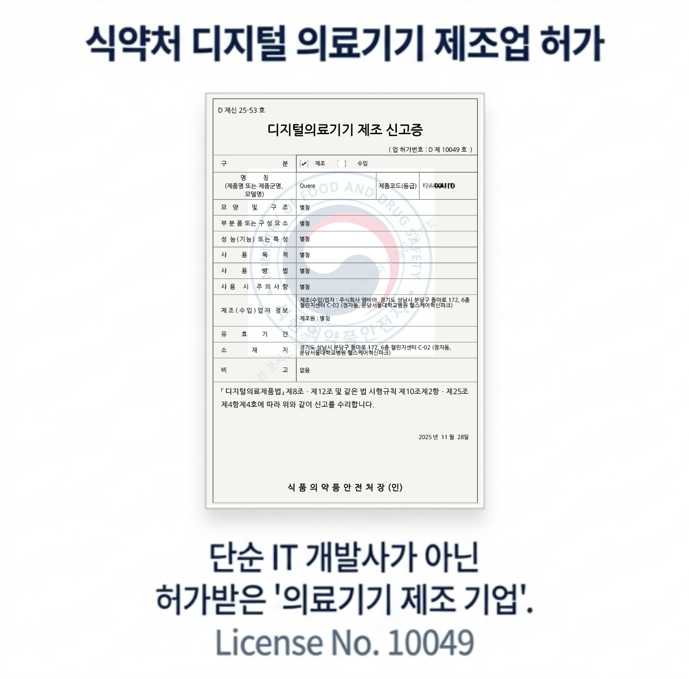

Clinical Excellence
- 검증된 의료 지식 기반 정밀 분석
- 상태 악화 시 즉각 알림
미래 의료의 스탠다드, Quere와 함께하십시오.
데이터가 어떻게 흐르고, 어떤 화면에서 활용되는지 한눈에 보여주는 서비스 전체 구조입니다.

의사·공학자 공동 설계로 “현장에서 바로 쓰이는 UX”와 “검증 기반 AI”를 결합합니다.

규제 산업에서 중요한 “근거”를 명확히 제시합니다.

